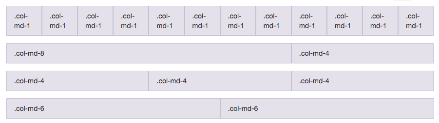
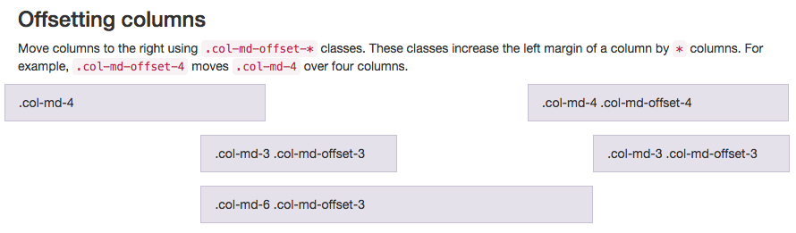
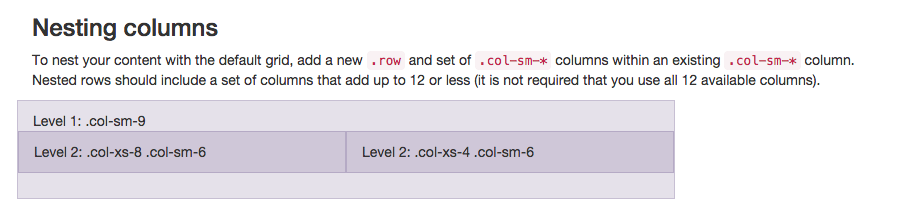
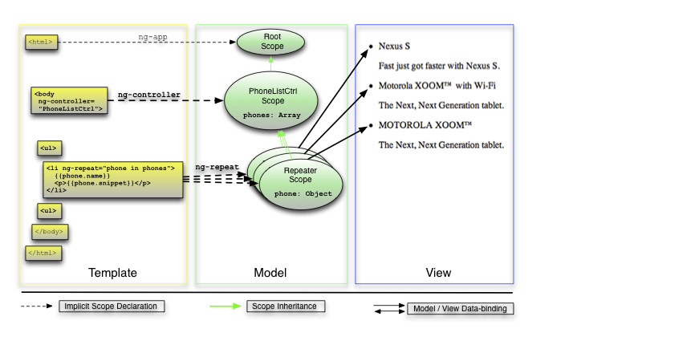

From to to
Responsive UI Mashup and Deploy
Created by Juan Bonfante / @juanbonfante
Apology
Why?
I'm trying to Inspire You
Good Code is like art.

Subjectively beautiful*
Follows Patterns*

But your rarely get it right the first time!
Anyone can learn
Background
Came from Colombia in 1992
Been living in chicago ever since.
Self-taught
CTO of Loooper LLC
Lead UI Engineer @ Enova
Rules I live and learn by
- Patience
- Perseverance
- Optimism
- Tolerance
- Subjectively Beautiful
- Follow Patterns
Work with others
You will get much further with people
!!!than without without them!!!
Learn from the past
You'll learn to do the right thing from the intolerance of others.
And from your own mistakes
What the hell does this have to do with code?
Everything
The process
The struggle
The patterns
The fact you're here!!!
Overlord
(github.com/jmmastey/level_up_exercises/tree/master/overlord)
- Exercise for Enova trainees
- Created by Joe Mastey
- Simple rules
- Simple Sinatra base...
- Fields to enter: Activation and Deactivation codes
- Field to enter a time for detonation
- ...etc
Tools
All follow patterns
Bootstrap

Always a grid of 12
Bootstrap
With Offsets

Bootstrap
Nested

AngularJS

Model View Controller
AngularJS
Model
AngularJS
View
AngularJS
Controller
Bower
NPM
TODO
Bower
NPM
TODO
Bower
NPM
TODO
Bower
NPM
TODO
Heroku
TODO
Heroku
Get An Account
Clever Quotes
These guys come in two forms, inline:
“The nice thing about standards is that there are so many to choose from”
and block:
“For years there has been a theory that millions of monkeys typing at random on millions of typewriters would reproduce the entire works of Shakespeare. The Internet has proven this theory to be untrue.”
Intergalactic Interconnections
You can link between slides internally, like this.